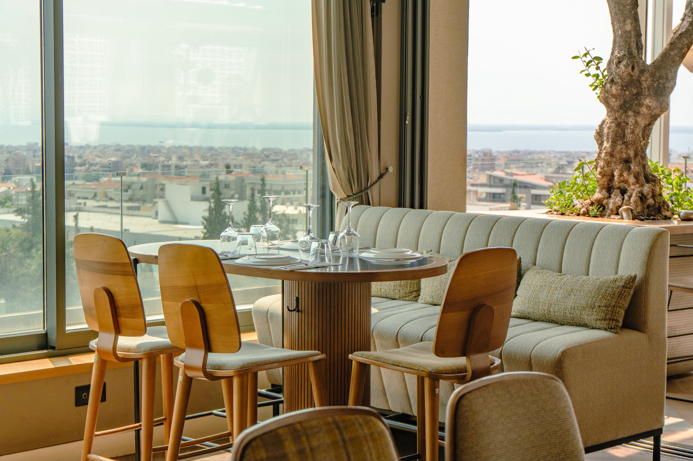
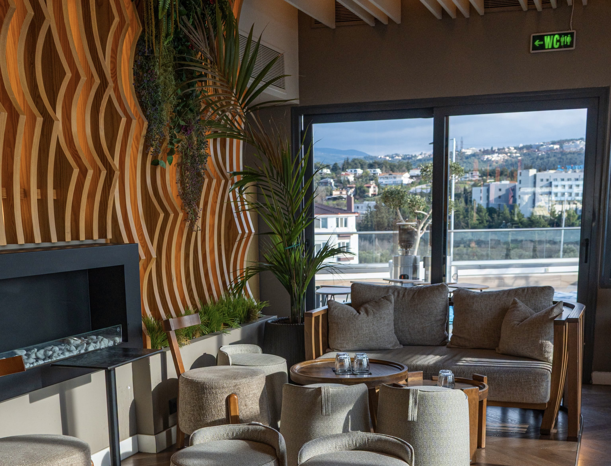
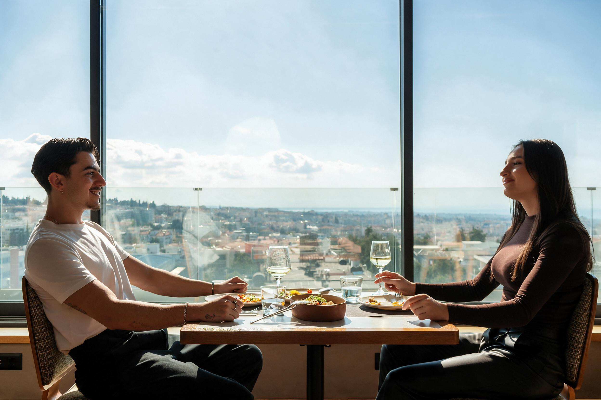

Μακριά από τη φασαρία του κέντρου αλλά με άμεση πρόσβαση από τον Περιφερειακό, το rooftop του Morrison διαμορφώθηκε για να προσφέρει έναν ευρύχωρο και τακτοποιημένο προορισμό. Ο χώρος παραμένει φωτεινός τις πρωινές ώρες για καφέ και brunch, ενώ καθώς δύει ο ήλιος μετατρέπεται σε ένα ατμοσφαιρικό σημείο συνάντησης για φαγητό και ποτό.
Ο σχεδιασμός του χώρου ακολουθεί καθαρές γραμμές: τραπέζια στην περιφέρεια με ανεμπόδιστη θέα στο ηλιοβασίλεμα, επιμελημένα τραπέζια φαγητού αφιερωμένα στις premium κοπές και τα φρέσκα ζυμαρικά, και ένα κεντρικό bar ως σημείο αναφοράς για cocktails και επιλεγμένη λίστα κρασιών.
«Απόλυτο highlight στη Θεσσαλονίκη! Το Morison Bar προσφέρει υπέροχη θέα στο κέντρο, εύκολο πάρκινγκ και έναν χώρο που είναι πάντα πεντακάθαρος, πανέμορφος και πραγματικά προσεγμένος. Το service είναι εξαιρετικό, με προσωπικό που ξέρει τη δουλειά του.»
«Τα φαγητά ήταν εξαιρετικά και ωραία μαγειρεμένα. Το σέρβις πολύ ευγενικό και η ατμόσφαιρα ωραία... Μία από τις πιο σταθερές επιλογές για καλό φαγητό και θέα στην ανατολική πλευρά της πόλης.»
«Η εξυπηρέτηση από την κοπέλα ήταν άψογη εξού και τα 4 αστέρια! Μεγάλες μερίδες γενικά που είναι πολύ θετικό, η σαλάτα ήταν τοπ και η θέα πραγματικά πολύ ωραία!»
Πυλαια 555 35, Θεσσαλονικη — JX5X+7F